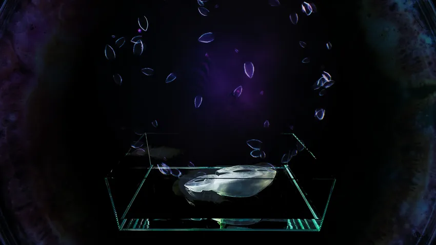

Birth in Water
What happens when a Water Being has weight, and the body holding it lets go?
Ruipeng Wang · Born, Not Made

The interval between bodies
The smaller body was made before it entered the carrier. What happens here that deserves the name birth? Watch the larger body as the smaller one slips free. Both turn.
Image and sound
Water Beings opens and closes the film. In the workshop a pump pushes a ball onto a table. A separate test shows a hand on a phone. The following 36 seconds stay with one overhead tank recording, moving closer to the opening through a fixed crop. A second prototype follows. The lower tone rises as the carrier turns. A second tone follows the changing gap between the bodies. Both pitches come from measurements in the overhead image. English captions describe the picture and score.
Arriving after the birth
Someone who enters during reset encounters a different work. The chamber is open, the offspring has to be returned, and a person has to do it. The proposed room gives that encounter a place beside the film. A seat faces the release edge from the side, outside the standing group.

The mother stays in the picture
Proposed English voiceover for the 79-second gallery cut. Play it as optional essay text in the gallery player. The original sound runs underneath.
In Water Beings, the dead stay where they fall. The next generation grows around them.
On the bench I could make a ball come out. I could pick it up and do it again.
Here you can see a hand. Remember it when the view changes.
In my first design, the mother died giving birth.
In the next design she lived. Watch her side of the opening.
Leave the opening and release without words.
I kept watching the child. When I looked back, the mother had turned in the water too.
To show this live again, someone has to put the child back.
The film can begin again exactly here. What would a second birth carry from the first?
Workshop record and script
The workshop journal includes two early designs. Ruipeng first imagined the parent dying at delivery, then revised the design so the parent could live on. The tabletop test and tank recording are separate experiments. The live reset is proposed.
What water does at birth
The word birth changes meaning along this history. A dividing cell, a fertilised egg, a live delivery and the welcoming of a newborn each locate the beginning in a different event. These cases trace several ways water participates. They belong to different branches of life and different traditions.
Water fills the gaps in a moving body
An ephyra has deep clefts between the lobes of its bell. Feitl and colleagues filmed flow around juvenile moon jellies. At that scale, layers of water moving with adjacent lobes overlap, so less water passes through the clefts during a stroke. The animal pushes with a larger effective surface than its tissue outline suggests. In the robot film a sliver of green marks the first visible gap. The camera can see that strip well before it can tell us where either body’s influence on the water ends.
What does the carrier keep different?
Preston and colleagues showed that a water-channel protein changes how quickly water crosses an oocyte membrane. Ripley measured the fluid inside the brood pouches of two pipefish species. The pattern differed between them during gestation. A membrane can change the rate of passage, and a parent can sustain a local environment over time. The workshop robot demonstrates hydraulic expulsion of a separately built child. What would the carrier have to supply throughout development for the claim of gestation to hold?
What survives in stone
Western Australia’s Dresser Formation preserves evidence of microbial life in a landscape with hot springs about 3.48 billion years ago. The deposits establish a habitat. The first reproductive event left no comparable record. Submarine vents and surface pools with wet–dry cycles remain competing settings for life’s beginnings. In living bacteria, binary fission gives a precise example of one cell becoming two. Calling that event a birth is an artistic choice.
A body big enough to leave an impression
By roughly 575 million years ago, large, complex bodies appear in the Ediacaran fossil record. Their impressions let us ask what it meant to occupy a patch of seafloor, acquire a surface and share space with other bodies. Their reproductive modes vary in how well we can reconstruct them. The living animals below are comparisons across branches of life.
Water brings some bodies together and carries others apart
In broadcast-spawning corals, eggs and sperm from separate colonies can meet in the water column. Timing matters. In some jellyfish, a polyp forms a stack of discs and releases juveniles called ephyrae. One case concerns fertilisation between organisms. The other offers an observable boundary between a joined structure and a free individual. The latter is the shot to study for the robot’s release.
An enclosure can carry its own fluid
The amnion surrounds the developing embryo with a fluid-filled cavity. Along with other membranes, it allows development on land with less dependence on an external body of water. This gives the project a model for the pouch as a maintained local environment. The printing gel supports fabrication inside the proposed robot. The tank water receives the released body. Each material has a different job.
Even in the sea, birth crosses a boundary
In studied seahorses, fluid inside the male’s pouch changes during gestation, approaching the osmotic concentration of seawater before release. In a documented beluga birth, the calf surfaced for air shortly after delivery. One transition is chemical, the other immediately demands movement toward air. A robot could have its own first requirement after release, such as recovering its orientation.
Three different settings for water
Amniotic fluid cushions the fetus and allows movement. The placenta supplies oxygen through the umbilical circulation. During labour, immersion in a pool is a separate choice, and delivery below the water surface is another. Michel Odent documented underwater birth in 1983. Cochrane distinguishes stages of labour in its evidence review. For the artwork, the useful question is whose body the water supports at each stage, including the person doing the labour.
Does water precede creation, or participate in it?
In an Egyptian creation account, the first mound emerges from Nun, the primeval waters. In the Guodian bamboo text Taiyi sheng shui (太一生水, manuscript around 300 BCE), the Great One produces water, and water returns to assist in forming the sky. That return offers a precise precedent for the final shot. Something produced by the first act can act back upon its source. These are two specific cosmologies with distinct accounts of agency.
Water can mark a social arrival
Accounts of Māori tohi describe a newborn being dedicated to an atua in a ceremony by a stream. Water, kin and spoken words locate the child in a network of relations after delivery. It raises a question for the installation: when do the beings already in the tank register the newcomer? The comparison concerns recognition. The rite belongs to the communities that practise it.
The interval after birth
The Uffizi identifies the painted moment in The Birth of Venus as arrival on Cyprus. The birth from sea foam has already happened. Someone on shore holds out a cloak. For a film about machine birth, this shifts attention to the receiving side of the image. Who or what is already there when a new body arrives?
Two ways to film a tank
In Hans Haacke’s Condensation Cube, the changing gallery environment affects what the water does inside a transparent enclosure. In Bill Viola’s Nantes Triptych, footage of childbirth and dying flanks a clothed man suspended underwater. Haacke suggests a method: let a real condition change the image. Viola suggests a duration: hold the in-between state long enough for a viewer to notice the effort of suspension.
What passes between bodies
Neimanis describes watery bodies as materially related while remaining different. For these robots, a wake offers a small, literal version of that relation. A change of posture in one body can reach another without either sharing its electronics. The water holds this trace briefly. Any long-term memory would have to be recorded by an individual robot.
From a rule of contact to the consequences of contact
In Water Beings, contact produces seven successive colour generations. Crowding exhausts virtual space and resources. The remains settle and change where later cells can grow. Born, Not Made gives that lineage a vulnerable surface, a mass and a finite place to go. A shared tank can carry one generation’s disturbance to the next. The sediment in the earlier work persists; a wake in the new one dissipates. That difference should remain visible.
What would count as a machine birth?
In the workshop, water fills a bladder and pushes a small body through an opening. The same operation works on a table. Why move it into a tank? Look at the carrier after the release. It floats there too. For a few seconds the camera can hold both bodies as their positions change, even if the child never makes a decision of its own.
What the water does
The tank lets the mother yield as well as the child. Her change of heading is easy to miss if the camera follows the departing body. Hold the glass edge in frame and watch the carrier against it. The footage records her turn. A second camera and a flow measurement would help distinguish a push at the opening from motion of the surrounding water.
What counts as birth here
Kingma asks whether a mammalian fetus is part of the organism that gestates it. Here the smaller hull already existed before anyone loaded it. In the overhead recording a strip of water separates the outlines at 25.9 s. By 36.8 s the smaller hull has curved back and the two outlines meet again. There are still two bodies. The image lets us time one passage while leaving open when the relation between carrier and child began, and what continues to sustain it.
What the next child inherits
A wake dies away. In Water Beings, the remains of a generation occupy space long after it dies. Imagine a gallery worker reaching into the tank to reload the same small body. How much of the first encounter would survive that hand? A future generation might inherit part of a learned response. For the prototype on view, the person doing the reset decides what carries over. A record of successive releases could show what actually differed each time.
The take that could prove us wrong
Film a release with a fixed side camera and a scale on the tank. First use an inert twin with matched mass and buoyancy, then use the active body under the same small pulse. Let the release pump stop before the test. Synchronise the video with the onboard tilt and actuator logs. Passive drift looks persuasive on film. An actuation after the disturbance, followed by a different trajectory from the control, would let an audience see what the newborn contributed. If the takes coincide, exhibit the release as release and leave the first response open.
MIT CSAIL’s SoFi offers a practical precedent for controlled motion and buoyancy in an underwater soft robot. Reproduction, post-release learning and the return of a detectable wake in this installation remain proposed experiments.